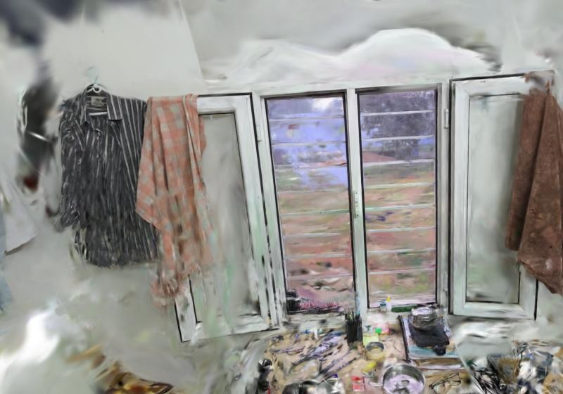
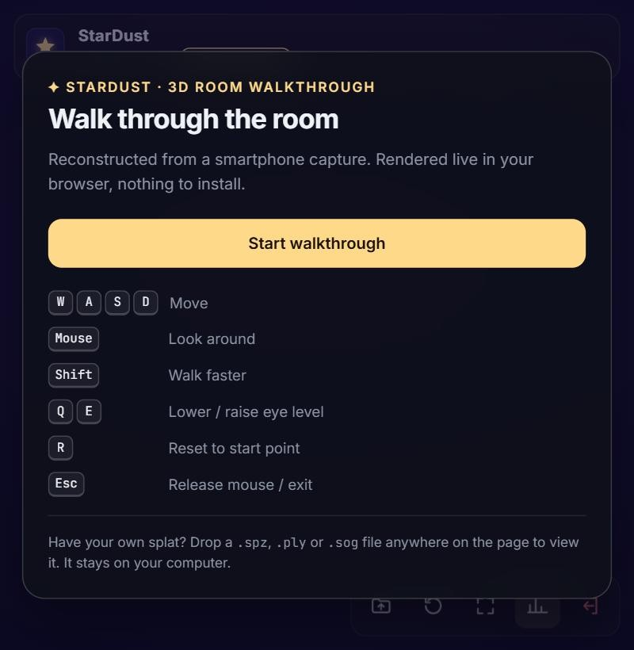

Result: one 3½-minute phone video of a real room was turned, with no manual modelling, into a 2.13-million-Gaussian 3D twin. The twin is published as a 42.9 MiB web page that loads in about 10 s and is explored in first person with WASD and the mouse. Rendered views at recovered camera poses match the original photos (Figure 3).
1. Problem and proposed solution
A floor plan does not show what a space looks like, and manual 3D modelling does not scale. StarDust is a software-only pipeline:
A non-expert records one walkthrough video following a fixed capture SOP.
Automated scripts select good frames, recover camera poses (COLMAP), train a 3D Gaussian Splatting model (nerfstudio Splatfacto), compress it, and derive metric scale and a walkable area from the camera path.
A zero-install web viewer (three.js + Spark) lets anyone roam the room like a video game.
The viewer is a normal three.js scene, so Round 2 POIs and path overlays attach to the same scene graph.
2. System architecture
Figure 1. Pipeline. Each stage is one command in scripts/run_reconstruction.sh / .ps1. Every run lives in its own folder, every native command is exit-checked, and timings and exact file sizes are written to run_metrics.json.
3. Capture SOP and reconstruction methodology
3.1 Capture SOP (capture_sop.md)
Space: one furnished room with even light. Remove moving objects and private items, and cover mirrors.
Phone: main 1× lens only, AE/AF locked, no zoom and no "super-steady" mode, so the camera keeps one intrinsic model.
Motion: about 0.3 m/s, always translating while turning (parallax), phone at chest height (≈ 1.3 m), 1–3 m from surfaces.
Route: entrance view, outer loop facing the centre with corner pauses, inner loop facing the walls, furniture arcs, then back to the entrance for loop closure.
Failure table: blur, reflections, textureless walls, movement and exposure drift are each mapped to a symptom and a fix.
3.2 Processing
Frame selection: decode at 6 fps and keep the sharpest frame (variance of Laplacian) in each group of 3, giving 2 fps.
Quality gate: reject blur (< max(40, 0.35 × median)), bad exposure, low texture and near-duplicates (dHash). The run stops if fewer than 40 frames remain.
SfM: COLMAP SIFT. With a local CUDA GPU we use exhaustive matching; on Colab CPU, sequential matching. The run stops if fewer than 70 % of frames register.
3DGS:ns-train splatfacto, 30k iterations, initialised from SfM points. Then ns-export and compression to SPZ.
Calibration: COLMAP has no metric scale. We recompute nerfstudio's dataparser transform from the poses and set the scale so that the median camera height equals the SOP's 1.3 m. The camera-path hull (+ 0.3 m) becomes the walk outline.
Our contributions (beyond COLMAP, nerfstudio and Spark): the capture SOP; sharpness-based frame selection; fail-fast quality and registration gates; isolated, resumable pipeline runs with automatic metrics; pose-based metric calibration with photo-vs-render verification; a local-GPU COLMAP path; and the first-person viewer with walk outline, validation, local file opening and robust loading.
4. Technology choices
Layer
Choice
Why (alternatives considered)
Representation
3D Gaussian Splatting [1]
Photoreal, view-dependent appearance at real-time rates in WebGL. NeRF ray marching is too slow for browsers, and meshes (Meshroom) lose thin and glossy detail.
Poses
COLMAP [2]
Reference SfM. Scriptable, gives initial points, and its official CUDA build runs on a laptop GPU. DUSt3R [4] is kept as a fallback for very sparse captures.
Training
Splatfacto / gsplat [5, 6]
One CLI for processing, training and export. About 6 GB of VRAM fits a free T4. Apache-2.0, whereas the original 3DGS code is non-commercial.
Viewer
Spark 2.3.1 + three.js
Splats are ordinary three.js objects, so custom FPS controls and future overlays work. Loads PLY, SPZ and SOG. MIT licence.
Delivery
SPZ on Vercel
11.8× smaller than the PLY and decodes on the CPU (SOG needs WebGPU, which Colab lacks). Static hosting with auto-deploy from git.
5. Reconstruction results (real room, measured)

Figure 2. Live viewer at the start pose (deployed site). Window grille, the view outside, hanging cloth and desk items are reconstructed from the phone video.
Stage
Measured value
Capture
3:31 video, 2560×1440 at 60 fps
Frames
1,269 candidates → 423 (sharpest of 3) → 345 pass gate (18.4 % rejected) → 328 used
Figure 3. Verification. Left: original phone frames. Right: the live viewer rendered from the camera poses recovered for those frames. Matching content and placement confirms the orientation, position and metric-scale calibration.
Coverage finding. The CPU run used sequential matching (each frame against its neighbours only), and 107 frames along one wall failed to register, so that wall is sparse in the published model. Re-running COLMAP on the laptop's RTX 5060 with exhaustive matching changed this:
Same 328 frames
Colab CPU, sequential
Laptop GPU, exhaustive
Registered frames
221 (67 %)
326 (99.4 %)
3D points / reprojection error
67,737 / 0.54 px
101,083 / 0.57 px
Extraction + matching + mapping
≈ 13 + 40 + 30 min
0.3 + 13 + 19.5 min
The improved poses are produced and verified to load in nerfstudio. A full training run on them was interrupted by the free Colab runtime disconnecting and is listed under future work, so the published model uses the 221-frame reconstruction.
6. Web viewer and interaction design
Start card with a control legend. The progress bar shows MB downloaded, and Start is enabled only after the model has decoded.
Movement: pointer-lock mouse-look (pitch ±85°) and WASD at 1.4 m/s (Shift 2×) with smoothed acceleration. The camera stays at 1.6 m above the calibrated floor; Q/E adjust it by up to ±0.6 m.
Walk outline: each step is tested as a segment against the outline polygon, with wall sliding. This is a navigation boundary, not collision: splats have no surfaces.
Robustness: field-by-field manifest validation; a single preallocated download buffer with stall timeout; clear errors for missing files, HTML 404s, no WebGL2 and context loss; drag-to-look fallback.
Extras: open or drop any local .spz/.ply/.sog to view it (it never leaves the browser); a ?calibrate panel; a technical HUD (FPS, splats, size, load time).

Figure 4. Viewer start card (StarDust theme) over the reconstructed room.
7. Testing methodology
Automated (npm test, run in GitHub Actions on every push):
23 JS tests: manifest validation; an L-shaped walk outline, including a regression for diagonal corner-cutting and a 60,000-step random-walk test; spawn projection.
5 Python tests: frame extraction; quality gate pass, fail and zero frames; splat statistics with the draft manifest.
CI also runs the production build, checks the built site contains its model, and smoke-tests the bash pipeline up to COLMAP.
Pipeline: every failure found during the real run is reproduced and fixed with a check: silent shell exit, missing CUDA in apt COLMAP, RAM exhaustion during the gsplat build, PyTorch 2.6 checkpoint loading, and missing WebGPU for SOG.
Model: COLMAP statistics, renders at recovered poses compared with the photos (Figure 3), and load and console checks on the deployed URL from a fresh session.
8. Limitations, reproducibility and roadmap
Limitations
One wall is sparse in the published model: 33 % of frames did not register with sequential CPU matching. The GPU exhaustive poses fix this (326/328) but still need training.
No physical collision: the camera can pass through furniture inside the outline.
Metric scale assumes the SOP's 1.3 m phone height (± a few cm).
Free Colab is slow (CPU COLMAP, a one-hour gsplat build) and can disconnect. A local CUDA toolchain removes both problems.
Reproducibility
Exact version pins, one script per platform plus a Colab notebook, per-run metrics, documented environment, and sample data in test/. A new room is swapped in through one manifest file.
Roadmap
Next: train on the 326/328 GPU poses; cache the gsplat build; run the whole pipeline locally on the RTX 5060.
Round 2: a floor occupancy grid from splats and SfM points, A* paths drawn as a floor ribbon, collision against that grid, and POIs with click-to-label and search-to-jump.
Quality: depth and normal priors and line and plane cues (IndoorGS [3]) for flat indoor walls.
Scale and AR: multi-room capture with doorway linking passes; WebXR navigation localised against the SfM map.
9. References and acknowledgements
B. Kerbl, G. Kopanas, T. Leimkühler, G. Drettakis. 3D Gaussian Splatting for Real-Time Radiance Field Rendering. ACM TOG (SIGGRAPH) 42(4), 2023.
J. L. Schönberger, J.-M. Frahm. Structure-from-Motion Revisited. CVPR 2016.
C. Ruan, Y. Wang, T. Guan, B. Zhang, L. Ju. IndoorGS: Geometric Cues Guided Gaussian Splatting for Indoor Scene Reconstruction. CVPR 2025.
S. Wang, V. Leroy, Y. Cabon, B. Chidlovskii, J. Revaud. DUSt3R: Geometric 3D Vision Made Easy. CVPR 2024.
V. Ye et al. gsplat: An Open-Source Library for Gaussian Splatting. JMLR 26, 2025.
M. Tancik et al. Nerfstudio: A Modular Framework for Neural Radiance Field Development. SIGGRAPH 2023.
Third-party software, used under licence: COLMAP 4.2.1 (BSD-3); nerfstudio 1.1.5 and gsplat 1.4.0 (Apache-2.0); Spark 2.3.1, three.js 0.186.1, splat-transform 3.10.1 and Vite 8.3.4 (MIT); FFmpeg via imageio-ffmpeg (LGPL/GPL binary, BSD-2 wrapper); NumPy and Pillow; Inter and JetBrains Mono fonts (OFL); Google Colab for GPU time; Vercel for hosting. Full list in references.md.